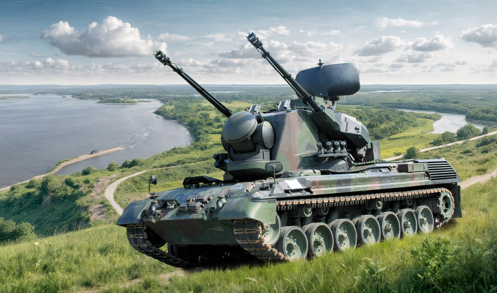
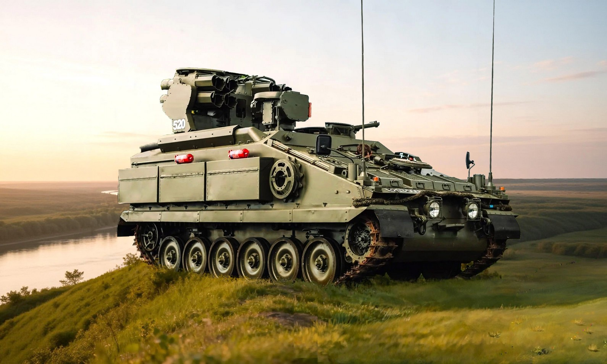
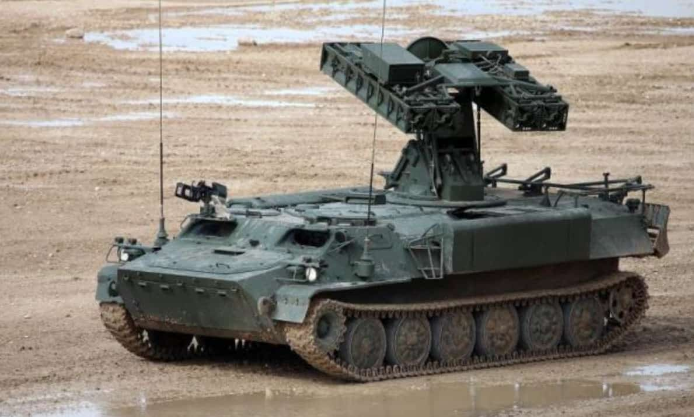
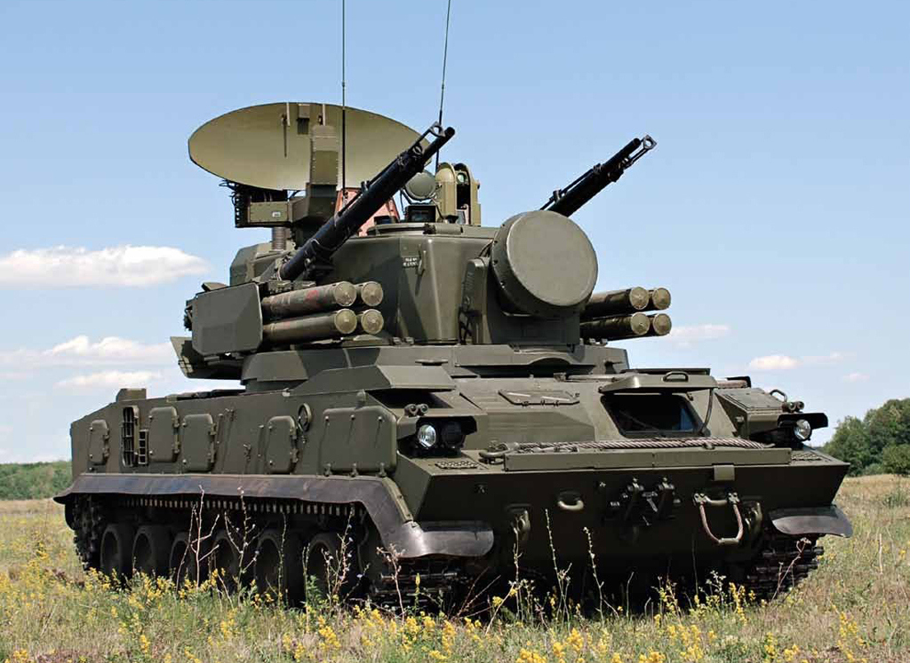

Циклова комісія
з експлуатації та бойового застосування озброєння протиповітряної
оборони Сухопутних військ
Оглядове відео
Начальник циклової комісії
підполковник
Голуб Руслан Вікторович
Стань «вартовим неба»: Опануй сучасну зенітну зброю у нашому коледжі!
Мрієш про кар’єру сучасного військового? Хочеш керувати потужною
технікою, яка захищає українське небо від ворожих літаків, ракет та
дронів?
Твій шлях починається тут - у Цикловій комісії з експлуатації та
бойового застосування озброєння протиповітряної оборони Сухопутних
військ Військового коледжу сержантського складу!
Хто ми?
Ми - підрозділ, де готують професійних сержантів для військ
протиповітряної оборони (ППО) Сухопутних військ.
Cпеціальність підготовки - К7 «Озброєння та військова техніка».
Спеціалізація – «Експлуатація систем та комплексів зенітного
озброєння Сухопутних військ».
Простіше кажучи, ми вчимо, як збивати в небі ворожі цілі та
забезпечувати безпеку наших військ на землі.
Чого ти навчишся?
Наші курсанти опановують не лише теорію, а й реальну техніку, яка сьогодні творить історію на полі бою:
- ЗРК «Оса-АКМ»: навчишся керувати бойовою машиною, яка бачить і знищує літаки та гелікоптери.
- ЗГРК «Тунгуска»: опануєш грізну установку, що поєднує в собі і ракети, і скорострільні гармати.
- Самохідні зенітні установки Gepard (Німеччина) - справжню легенду та «нічний кошмар» для ворожих безпілотників. Ти дізнаєшся, як працюють його розумні радари та як досягається хірургічна точність вогню.
- Комплекси Avenger (США) - втілення американської мобільності. Навчишся керувати системою на базі всюдихода Humvee, що знищує цілі ракетами Stinger за принципом «вистрілив-забув».
- ПЗРК: дізнаєшся все про переносні ракети («Ігла», «Stinger», «Piorun»).
- Тактика бою: ти зрозумієш, як перехитрити ворога та правильно організувати оборону.
Озброєння ППО Сухопутних військ







Чому обирають нас?
- Менше теорії - більше практики: понад 60% навчання проходить на реальній техніці та спеціальних тренажерах.
- Сучасні технології: ми використовуємо комп’ютерні моделі-тренажери. Ти зможеш відпрацювати пуск ракети у віртуальному просторі, перш ніж вийти на справжній полігон.
- Зручність та доступність: Усі навчальні матеріали, відеоуроки та посібники доступні онлайн через систему Moodle. Готуйся до занять у зручний час.
- Досвідчені наставники: наші викладачі - це практики, які знають кожну деталь техніки та допоможуть тобі стати справжнім професіоналом.
Ким ти станеш?
Після навчання ти отримаєш диплом фахового молодшого бакалавра
(спеціальність К7 «Озброєння та військова техніка») та звання
сержанта. Ти будеш не просто техніком, а командиром бойової
машини - лідером, від якого залежатиме безпека українського неба.
Тривалість навчання – 2 роки.
ЯКА ВАРТІСТЬ НАВЧАННЯ?
- здобуття фаховї передвищої освіти – БЕЗКОШТОВНО;
- проживання – БЕЗКОШТОВНО;
- харчування – БЕЗКОШТОВНО;
- військова форма – БЕЗКОШТОВНО;
- медичні послуги – БЕЗКОШТОВНО;